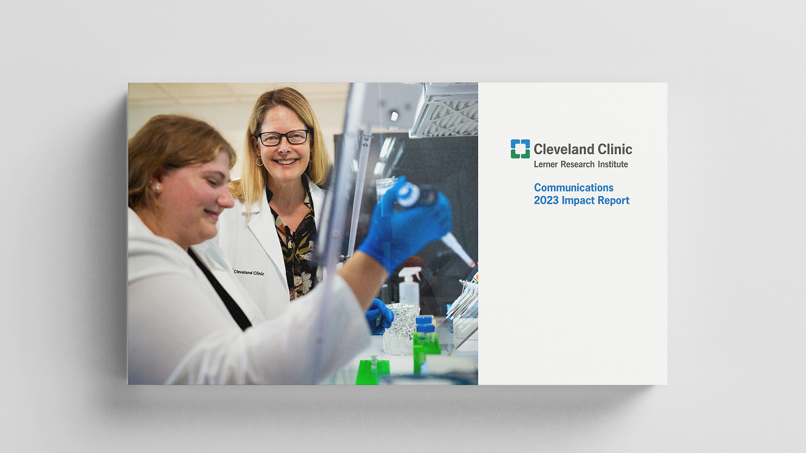
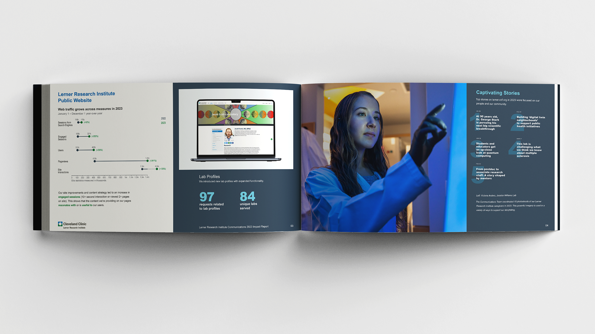
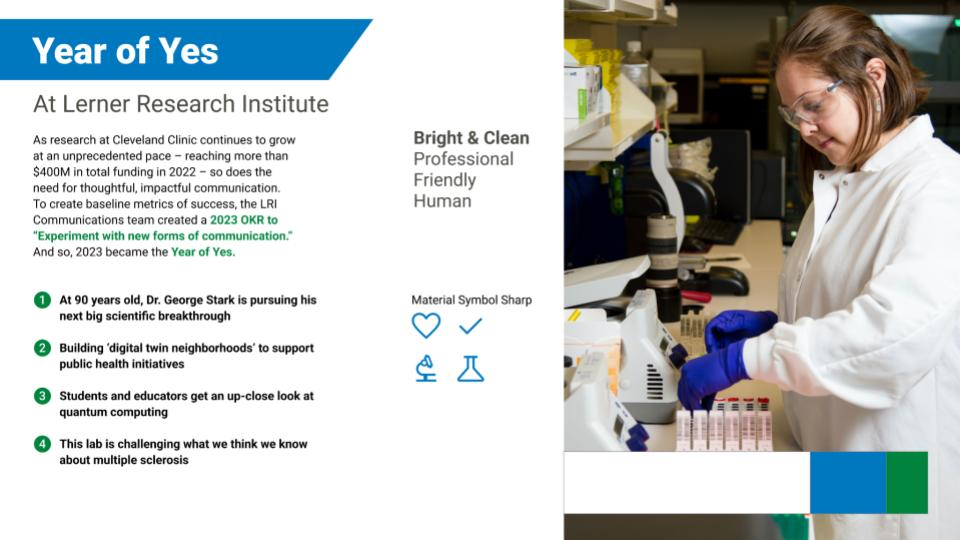
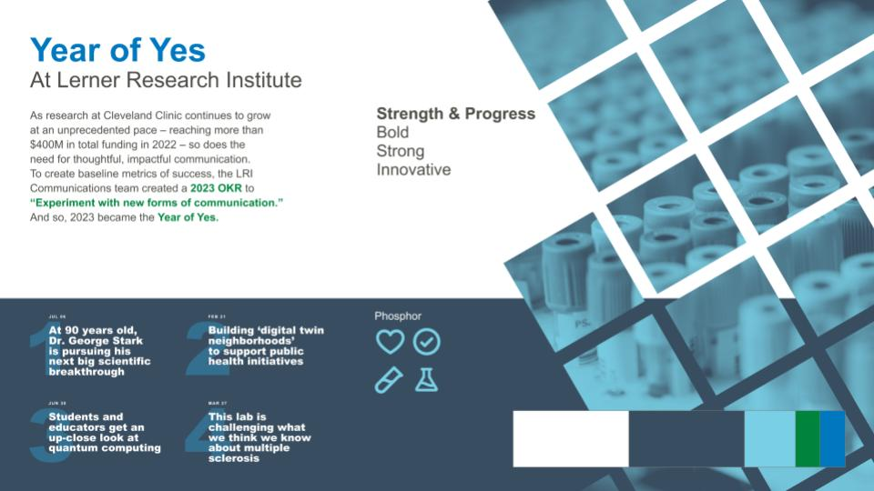
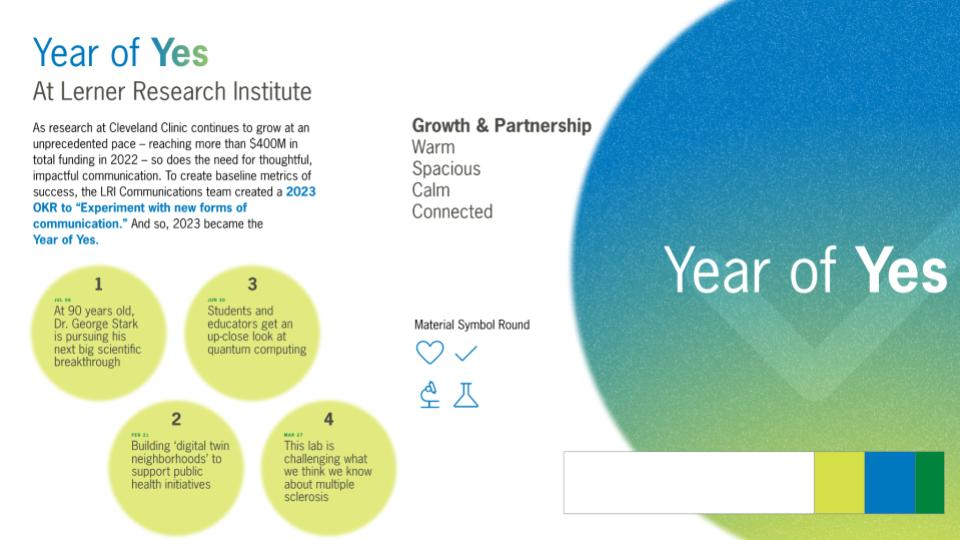

Print, Information
The Cleveland Clinic Lerner Research Institute Communications team set out to create a report that highlighted the breadth and impact of its work and outcomes over the course of 2023.
Internal caregivers were the primary audience, but the report needed to be flexible enough to work for external or community stakeholder presentations.
The primary intent was to be digital, but the team needed a report that was flexible enough to function across mediums, whether print, digital static document, or in-person presentation.
The final concept recognizes the constraints of the brief and presents a flexible design suitable for print, screen, or presentation. Each page functions as an individual layout that stands on its own but sequencing is considered to allow for full spreads as well.

Data and numbers have been altered.
With the Communications team, several concepts were explored ranging from nearly identical to existing internal documents to more radical and exploratory approaches.


